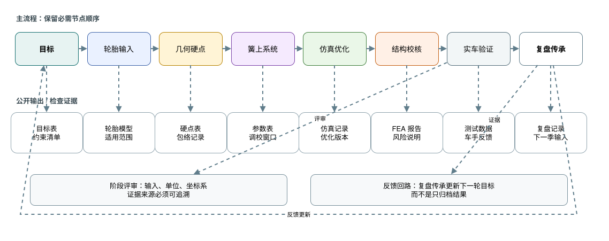

FSAE 悬架学习路线
面向 FSAE / Formula Student 车队的悬架知识、软件路线、设计流程和检查清单。公开版只包含重写后的学习资料，不分发原始队内文件。
图文总览

- 00 使用
- 01 学习
- 02 目标
- 03 轮胎
- 04 硬点
- 05 弹簧阻尼
- 06 仿真
- 07 结构校核
- 08 验证
- 09 软件
- 10 清单
提示：GitHub 会直接渲染 Markdown 文件。这个 HTML 页面只是一个轻量导航，不依赖任何构建工具。
面向 FSAE / Formula Student 车队的悬架知识、软件路线、设计流程和检查清单。公开版只包含重写后的学习资料，不分发原始队内文件。

提示：GitHub 会直接渲染 Markdown 文件。这个 HTML 页面只是一个轻量导航，不依赖任何构建工具。